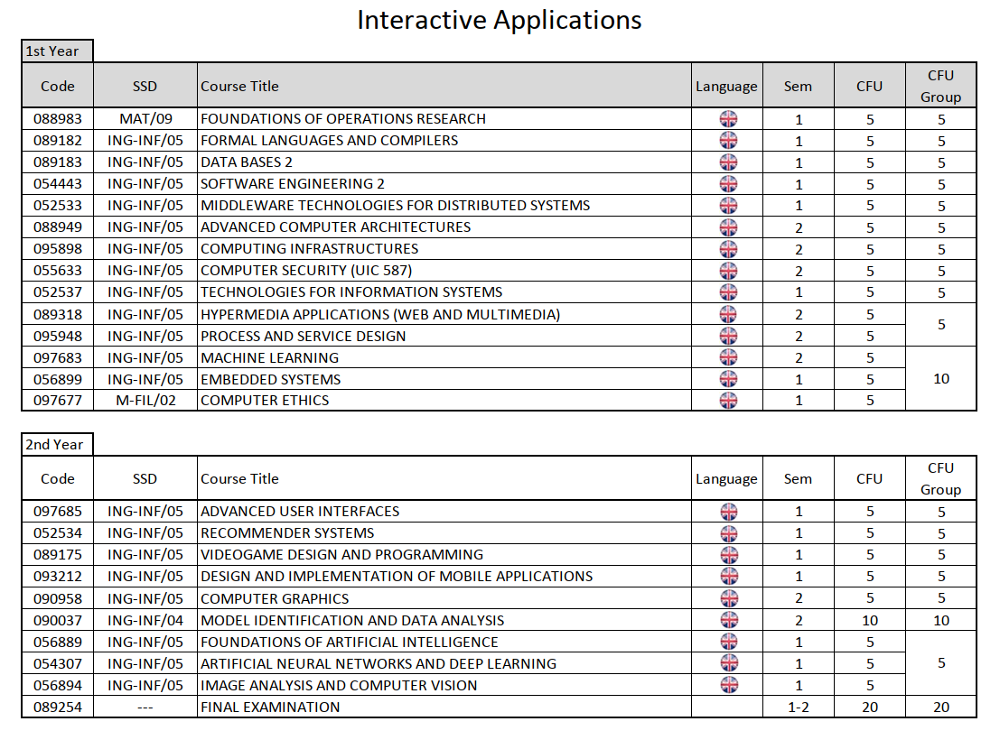

2021 -
PC: 10683050 MAT: 992797 EMAIL: alessio.hu@mail.polimi.it

1-1-----------------------------------------------
5 FORMAL LANGUAGES
AND COMPILERS
5 DATA BASES 2
5 SOFTWARE ENGINEERING 2
5
TECHNOLOGIES FOR INFORMARTION SYSTEMS
5 THEORETICAL COMPUTER
SCIENCE
= 25
1-2-----------------------------------------------
5
FISICA TECNICA
5 MACHINE LEARNING
5 COMPUTER SECURITY
5
ADVANCED COMPUTER ARCHITECTURES
5 HYPERMEDIA APPLICATIONS (WEB AND
MULTIMEDIA)
5 COMPUTING INFRASTRUCTURES
= 30
2-1-----------------------------------------------
5
ADVANCED USER INTERFACES
5 NUMERICAL ANALYSIS
5 DESIGN AND
IMPLEMENTATION OF MOBILE APPLICATIONS
5 ARTIFICIAL NEURAL NETWORKS
AND DEEP LEARNING
5 IMAGE ANALYSIS AND COMPUTER VISION
= 25
2-2-----------------------------------------------
5
MECCANICA
5 COMPUTER GRAPHICS
10 MODEL IDENTIFICATION AND DATA
ANALYSIS
20 TESI
= 40
======================================================================
15
CFU from INT1:
10 MODEL IDENTIFICATION AND DATA ANALYSIS
5 NUMERICAL ANALYSIS
45 CFU from TABA:
5 DATA BASES 2
5 FORMAL LANGUAGES AND COMPILERS
5 SOFTWARE ENGINEERING 2
5 TECHNOLOGIES FOR INFORMATION SYSTEMS
5 THEORETICAL COMPUTER SCIENCE
5 ADVANCED COMPUTER ARCHITECTURES
5 COMPUTER SECURITY - UIC 587
5 COMPUTING INFRASTRUCTURES
5 MACHINE LEARNING
30 CFU from TABB
5 ADVANCED USER INTERFACES
5 ARTIFICIAL NEURAL NETWORKS AND DEEP LEARNING
5 DESIGN AND IMPLEMENTATION OF MOBILE APPLICATIONS
5 IMAGE ANALYSIS AND COMPUTER VISION
5 COMPUTER GRAPHICS
5 HYPERMEDIA APPLICATIONS (WEB AND MULTIMEDIA)
10 CFU
unknown:
5 MECCANICA
5 FISICA TECNICA